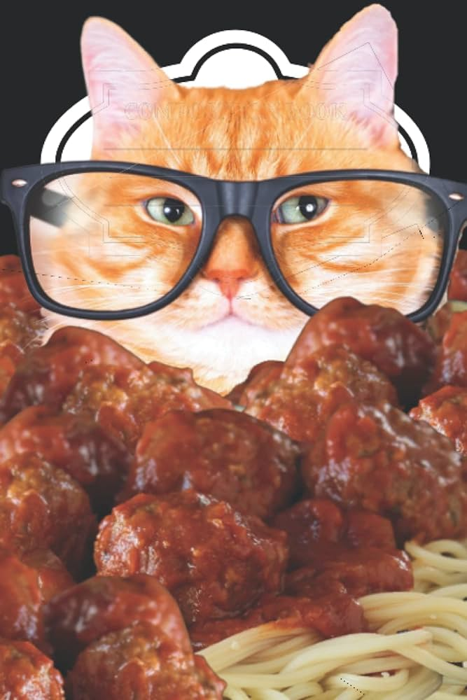

Checkers' Famous Spaghetti and Meatballs

Description
Back in Missouri, Checkers was a strapping young kitty cat at the time. Since his parents were on a shoe string budget, one of their
go to meals was spaghetti and meat balls. Since Checkers was so young and full of energy, he could jump on many household surfaces
and reach places the dog generally couldn't. One of Checkers' favorite places to investigate was the stove at dinner time. On more
than one occasion, his humans turned their backs for a second only to find Checkers had stuffed his entire face into a fresh pot of
red sauce, spaghetti, and meat balls.
This recipe is a basic spaghetti with beef meat balls and red sauce. A Checkers specialty. Yum!
Ingredients
Spaghetti noodles
Red sauce
1 lb ground hamburger
Salt
Pepper
Italian seasoning
Breadcrumbs
Instructions
- Set oven to 400 degrees.
- Season meatballs with italian seasoning, salt and pepper.
- Mix breadcrumbs into the meat.
- Form ground hamburger into balls.
- Put meatballs on baking sheet. Let bake for 15 minutes, or until lightly browned.
- Bring a pot of water to boil over high heat. Throw in a pinch of salt.
- Once boiling, turn water down to medium-high and insert the spaghetti noodle.
- Cook spaghetti noodles until just past al-dente.
- Drain pasta. Replace pot with red sauce.
- Put the pasta and meatballs into the red sauce. Let cook for 3-5 more minutes.
- Serve on plates with plenty of napkins. Enjoy!